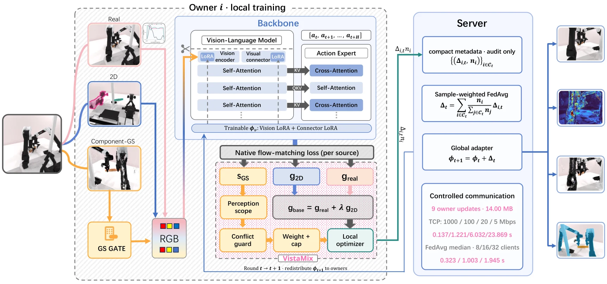

Reference observations and component 3DGS, across near and far cameras.
Explore the sources ↓TL;DRFedVista learns from diverse visual sources within each client. VistaMix protects a real-and-2D base update while incorporating valid geometric supervision. Clients share LoRA updates through standard FedAvg, keeping raw robot trajectories local.
Abstract
Federated Vision–Language–Action (VLA) adaptation must accommodate heterogeneous visual conditions and local supervision while keeping robot trajectories local. Image-space augmentations provide inexpensive appearance variation, while Gaussian Splatting (GS) adds structured views whose validity depends on scene coverage, camera configuration, and action alignment. Naively combining these sources can introduce unreliable supervision into local updates. We present FedVista, a federated VLA adaptation framework built around VistaMix, a safeguarded local gradient-composition rule. VistaMix uses real observations and 2D augmentations to form a reference update, incorporating eligible GS supervision as a perception-restricted correction with validity weighting, conflict projection, and norm control. Each client returns standard Low-Rank Adaptation (LoRA) updates for sample-weighted Federated Averaging (FedAvg). Across all ten LIBERO-10 tasks, VistaMix achieves 46.00% pooled out-of-distribution (OOD) success, exceeding equal-budget NaiveJoint by 3.28 percentage points (95% CI [1.06, 5.50]) while retaining 78.17% canonical-domain success. Additional evaluations show client-macro and worst-client improvements and extend the composition rule to OpenVLA-OFT and HPT with different structured visual sources. Controlling auxiliary visual supervision improves federated VLA robustness while preserving standard server-side aggregation.
01 · Method
Diverse evidence.
A protected update.
A visual source that helps one task or client may hurt another. VistaMix controls which GS observations contribute and how much they can change the local update.
Real + 2D
Original behavior and appearance variation form the base gradient.
b = greal + 0.75 g2DValid GS views
Local coverage, visibility and alignment checks identify eligible supervision.
Perception parameters onlyVistaMix
Weight, project and cap the GS correction relative to the base update.
g = b + bounded correctionLoRA → FedAvg
One adapter update per client. A standard sample-weighted server.
Raw trajectories stay local
A reliable reference direction
Real observations anchor the action target; 2D augmentation adds appearance diversity. GS contributes structured viewpoint and scene variation as a correction to that reference.
Preset weights, adaptive influence
The auxiliary coefficients are 0.75 for 2D and 0.25 for GS. Validity weighting and norm capping determine the effective GS contribution at each step.
One common federated interface
Clients can use different visual resources while returning the same adapter format. Source composition happens locally, before aggregation.
02 · Results
More robust across
visual conditions.
Under matched training and evaluation budgets, VistaMix improves OOD success over joint source mixing. The gain remains positive in every leave-one-task-out analysis.
LIBERO-10 success
Higher is better · %Ten tasks · 1,800 OOD and 600 canonical episodes per method. Values from the main results table.
View the complete LIBERO-10 outcome table
| Method | Pooled OOD | Appearance | Viewpoint | Mixed | Worst shift | Canonical |
|---|
Across architectures
The same principle,
different policy interfaces.
OpenVLA-OFT OOD
+6.11 pp over 2D, with GS supervision.
HPT on MetaWorld OOD
+4.31 pp over NaiveJoint-HPT, with recorded multiview observations.
03 · Visual worlds
See the sources.
Understand the variation.
Reconstruction, appearance and camera geometry provide different kinds of visual evidence. Explore the recorded source comparisons below.
Real observations and GS renders
Synchronized head and external camera observations show the real PiPER trajectory alongside its Gaussian Splatting representation.
Recorded source comparison · original playback timing04 · Policy comparison
A shared task.
Stronger visual robustness.
Frozen and VistaMix under the same mixed visual shift. Every initial state in this recorded batch is shown side by side.
Successful episodes in this selected batch.
LIBERO task 5 · mixed shift · seed 1087.
Complete paired recordings; batch counts are distinct from the pooled paper results.
Citation
@misc{fedvista2026,
title = {FedVista: Robust Federated VLA Learning
from Diverse Visual Worlds},
author = {Anonymous Authors},
year = {2026}
}